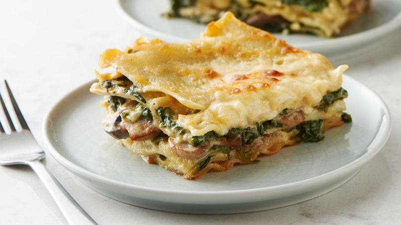

Spinach Lasagna

Iron packed Lasagna
This hearty lasagna, filled with popeye fury, will have you eating till you can't walk no more!
It is super easy to make and tastes delish, leaving every family member from near and far pestering you for the...
Ingredients:
- 15 lasagna noodles
- 2 Tbsp olive oil
- 200g chopped mushrooms
- 1 medium chopped onion
- 2 cloves garlic chopped
- 300g spinach
- 400g ricotta cheese
- 200g cream cheese
- 1 large egg
- 1 tsp salt
- 1 tsp dried oregano
- 1 tsp basil leaves
- 200g tomato paste
- 100g grated parmesan cheese
- 250g mozzarella cheese
Steps to success:
- Preheat the oven to 180 degrees C
- Bring a large pot of lightly salted water to a boil. Add lasagna noodles and cook for 8 to 10 minutes or until al dente; drain
- Meanwhile, heat olive oil in a skillet over medium-high heat. Add mushrooms, onions, and garlic and cook until onions are tender; drain excess liquid and cool
- At the same time, bring a small pot of water to a boil; add spinach and simmer for 5 minutes. Drain and cool slightly; squeeze out any excess liquid and finely chop
- Combine cream cheese, egg, salt, oregano and basil in a bowl. Add cooled mushroom mixture and spinach; beat with an electric mixer on low speed for 1 minute
- Lay 5 lasagna noodles in the bottom of a 9x13-inch baking dish. Spread 1/3 of the cream cheese-spinach mixture over noodles, then sprinkle with mozzarella and parmesan cheese. Spread tomato paste over top. Repeat layers two more times, then cover with aluminum foil
- Bake in the preheated oven for 1 hour. Cool 15 minutes before serving and be ready to eat your face off